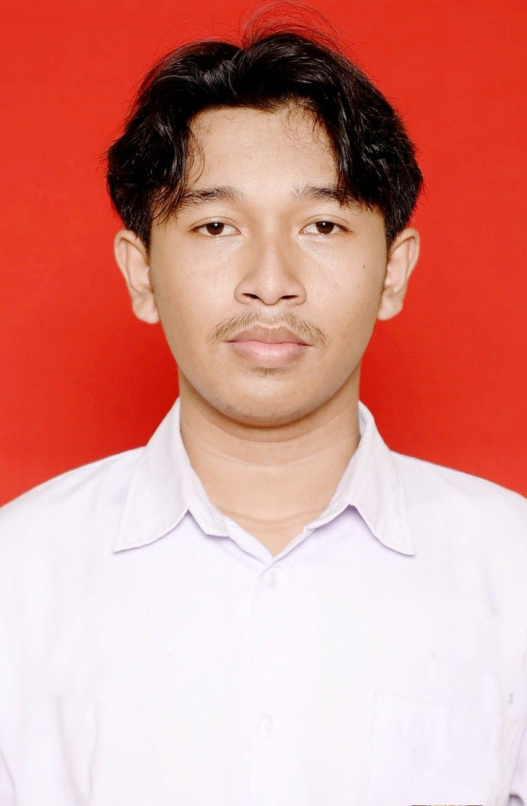

HALO, SAYA
Gandhi Musyaffa Mutigiri
Mahasiswa Teknologi Informasi
Saya merupakan mahasiswa Universitas Jember, Fakultas Ilmu Komputer, Program Studi Teknologi Informasi.
Saya memiliki ketertarikan pada bidang teknologi, pemrograman, dan pengembangan website.
Tentang Saya
Tentang Saya
Perkenalkan, saya Gandhi Musyaffa Mutigiri. Saya lahir dan besar di Kabupaten Jember, Jawa Timur.
Saat ini saya sedang menempuh pendidikan di Universitas Jember, Fakultas Ilmu Komputer, Program Studi Teknologi Informasi.
Saya tertarik untuk mempelajari berbagai hal yang berkaitan dengan teknologi, terutama pemrograman, database, dan pengembangan website.
Data Diri
- Nama: Gandhi Musyaffa Mutigiri
- Asal: Jember
- Provinsi: Jawa Timur
- Universitas: Universitas Jember
- Fakultas: Ilmu Komputer
- Program Studi: Teknologi Informasi
Pendidikan
Berikut merupakan jenjang pendidikan yang telah saya tempuh:
-
SDN Jember Lor 01
Tahun 2019 - Sekolah Dasar
-
SMPN 3 Jember
Tahun 2022 - Sekolah Menengah Pertama
-
SMAN 2 Jember
Tahun 2025 - Sekolah Menengah Atas
-
Universitas Jember
Program Studi Teknologi Informasi
Skills
Beberapa kemampuan yang sedang saya pelajari dan kembangkan:
- HTML
- CSS
- JavaScript
- Visual Studio Code
- PostgreSQL
- Decision Making
- Renang
Hobi
Beberapa kegiatan yang saya sukai:
- Renang
- Belajar teknologi
- Belajar pemrograman
- Bermain game
Portfolio dan Prestasi
-
Juara 3 Renang Jatim Open
Salah satu prestasi yang pernah saya raih dalam bidang olahraga renang adalah mendapatkan juara 3 dalam kompetisi Jatim Open.
-
Website Biodata
Website biodata pribadi yang dibuat menggunakan HTML, CSS, dan JavaScript sebagai bagian dari pembelajaran pemrograman web.
Kontak
Berikut merupakan informasi yang dapat digunakan untuk menghubungi saya:
- Email: gandhimm50@gmail.com
- WhatsApp: 0821-4056-2488
- Instagram: @gd.mtg
- GitHub: github.com/dmondgmnon
JavaScript DOM
Klik tombol di bawah untuk mengubah teks ini.